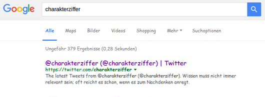

@charak
@charakDeine Website, mein CSS
Als Gestalter hat man einen Blick dafür, wenn Dinge nicht ganz optimal aussehen. Ob das nun zu kleine Schrift ist, ein störender Banner oder typografische Details (wie im xkcd-Comic Bad Kerning). Würde man jedes Mal den jeweiligen Urheber anschreiben, das Problem erklären und warum die Welt viel schöner wäre, wenn man das anders gestaltet – man käme gar nicht mehr dazu, sein Mailprogramm zu schließen. Und gefrustet wäre man am Ende auch, denn nicht jeder sieht ein, warum so ein Detail geändert werden sollte.
Falls diese „Gestaltungsfehler“ auf einer Websites zu finden sind (und man ein bisschen CSS kann), habe ich eine gute Nachricht: Jeder Internetnutzer kann die Darstellung beliebiger Websites in seinem Browser beeinflussen – und so wenigstens seine eigene Welt ein bisschen schöner machen. Möglich machen das benutzerdefinierte CSS-Befehle.
Was ist User-CSS?
Dabei handelt es sich um CSS-Anweisungen in einer Datei oder innerhalb einer Browser-Erweiterung. Mit diesem CSS kann man Formatierungen auf jeder beliebigen Website einfach überschreiben. Beispielsweise macht für mich der Code
a:visited { color: #752 !important; }
besuchte Links auf der Website https://ubuntuusers.de dunkler. So kann ich erkennen, welche Verweise ich schon einmal aufgerufen habe. Ein weiteres Beispiel aus meiner Nutzer-CSS-Datei:
.postArticle-content, .notesPositionContainer {
letter-spacing: 0 !important; }
.postActionsBar { display: none !important; }
Das zeigt mir die Texte auf https://medium.com ohne Buchstaben-Sperrung und blendet die untere Leiste aus. Weitere Anpassungen in meiner Nutzer-CSS-Datei aktivieren auf Wikipedia die Silbentrennung, entfernen nervige Overlay-Hinweise diverser Seiten, machen fixierte Menüs scrollbar oder ändern die Schriftfarbe von blassgrau auf lesbares dunkelgrau.
Wohin mit meinen CSS-Korrekturen?
Je nach Browser und Betriebssystem geht man ein wenig anders vor. Am besten finde ich die Lösung von Firefox, eigene CSS-Anweisungen in eine bestimmte Datei im Profil-Ordner zu legen. Das war einst auch mit Chrome und Opera möglich, jetzt benötigen diese Browser eine Erweiterung. Im Einzelnen:
Mozilla Firefox
Hier stehen die CSS-Anpassungen in einer Datei namens userContent.css. Sie liegt im eigenen Profil-Ordner im Verzeichnis chrome (muss evtl. erst angelegt werden). Bei Linux also unter ~/.mozilla/firefox/<Profil-Ordner>/chrome/userContent.css, bei Windows unter %APPDATA%\Mozilla\Firefox\Profiles\<Profil-Ordner>\chrome\userContent.css. Die Mozilla-Hilfe erklärt, wie man den Profil-Ordner findet.
Möchte man CSS-Stile nur auf einer bestimmten Website anwenden, umschließt man sie mit
@-moz-document domain(EXAMPLE.COM) { <CSS-Code> }
Internet-Explorer und Microsoft Edge
Laut IT Support Guides (engl.) kann man im Internet-Explorer den Speicherort seiner CSS-Datei frei wählen. Ich bin mir aber nicht sicher, ob man damit CSS-Stile auf bestimmte Seiten einschränken kann. Microsoft Edge scheint im Augenblick User-Stylesheets nicht zu unterstützen.
Opera, Chrome und Safari
Eine sehr verbreitete Erweiterung, um Website-CSS anzupassen, ist Stylus (für Opera und Chrome, bzw. eine ältere Stylish-Variante für Safari). Hiermit habe ich aber keine Erfahrungen und kann nur auf die englischsprachige Website des Entwicklers verweisen. Update 5. Juli 2018: Hier hatte ich ursprünglich auf die Original-Erweiterung Stylish verwiesen, die seit 2017 aber anscheinend massives Tracking betreibt.
Mit Stylus (das es übrigens auch für Firefox gibt) kann man eigene CSS-Anpassungen verwalten oder vorgefertigte Stildateien von https://userstyles.org installieren. So erscheint Facebook dann zum Beispiel im schwarz-grünen Monster-Energy-Look. Wem’s gefällt.
Vieles ist möglich
Man muss sich nicht mit einer schlecht gestalteten Website abfinden. Wer seine Google-Ergebnisse lieber in Comic Sans lesen möchte, hat mit User-CSS die Möglichkeit dazu.

---
Rubrik(en): #methodik